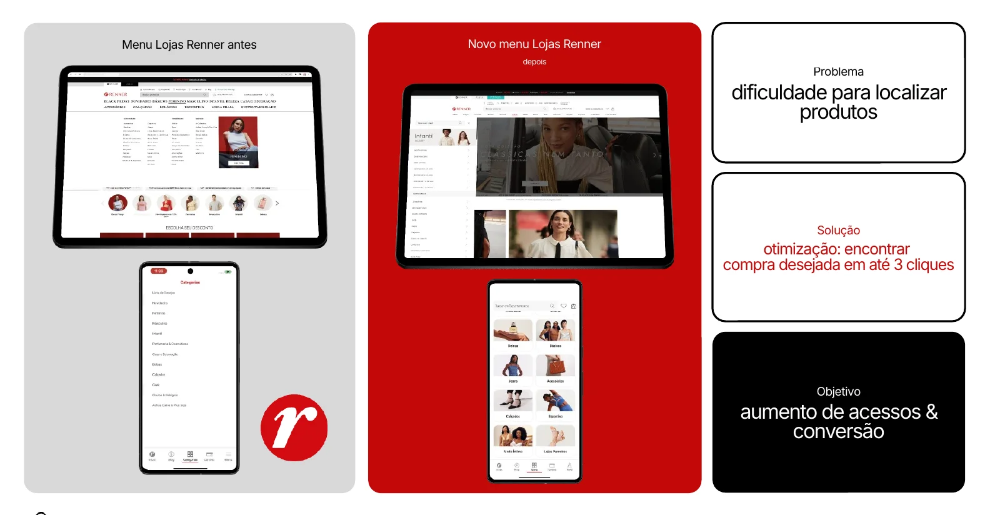
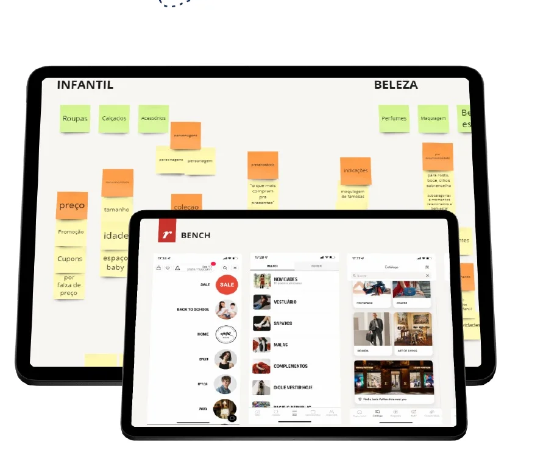

Lojas Renner
Um novo menu para o site e o app da Renner, para que as pessoas encontrem o que procuram com menos esforço.

O problema
Dificuldade para localizar produtos.
O menu antigo dificultava encontrar as peças. O objetivo era aumentar os acessos e a conversão.
A solução foi otimizar o caminho até o produto: encontrar a compra desejada em até 3 cliques.
Meta
“Encontrar a compra desejada em até 3 cliques.”
Processo de descoberta
Do departamento à loja
- 01
Fase 0
Entrevistas com usuários de cada departamento e workshop para desenhar o menu com as áreas-chave.
- 02
Fase 1
Teste de usabilidade não moderado com público interno.
- 03
Fase 2
Teste de usabilidade com 10 usuários em loja.
- 04
Fase 3
Teste de usabilidade em modo guerrilha com 40 usuários em loja.
Workshop
Todas as áreas na mesma mesa.
Apresentei o projeto aos stakeholders de tecnologia, PM, PO, comercial e marketing, e mapeamos juntos as dificuldades e os próximos passos.
Workshop
O menu desenhado por departamento

Entregas
Da pesquisa ao menu
- Entrevistas
- Workshop
- Taxonomia
- Arquitetura da informação
- Testes de usabilidade
- Menu do site
- Menu do app
Quer um projeto assim para o seu negócio?
Vamos conversar sobre o seu projeto.